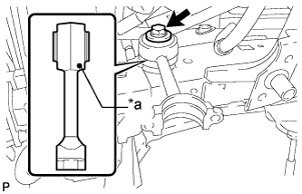
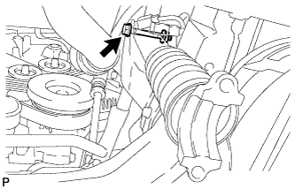
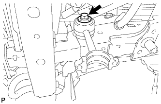

ПЕРЕДНИЙ СТАБИЛИЗАТОР ПОПЕРЕЧНОЙ УСТОЙЧИВОСТИ (для моделей с KDSS) > УСТАНОВКА |
| 1. ВРЕМЕННО УСТАНОВИТЕ ПРАВУЮ СТОЙКУ ПЕРЕДНЕГО СТАБИЛИЗАТОРА В СБОРЕ |
|  |
Предварительно закрепите стойку переднего стабилизатора в сборе и дистанционную шайбу с помощью болта.
| *a | Положение метки |
| 2. ПРЕДВАРИТЕЛЬНО ЗАКРЕПИТЕ ЦИЛИНДР ПЕРЕДНЕГО СТАБИЛИЗАТОРА С ТРУБОПРОВОДОМ В СБОРЕ |
Установите 2 колпачка прокачных штуцеров на цилиндр переднего стабилизатора с трубопроводом в сборе.
|  |
Предварительно закрепите цилиндр переднего стабилизатора с трубопроводом в сборе с помощью гайки и болта.
| 3. ПОДСОЕДИНИТЕ РЕГУЛИРОВОЧНУЮ ТРУБКУ ПЕРЕДНЕГО СТАБИЛИЗАТОРА № 1 В СБОРЕ |
Нанесите жидкость для подвески на резьбу конусных гаек.
Подсоедините регулировочную трубку переднего стабилизатора № 1 к цилиндру переднего стабилизатора с трубопроводом в сборе и затяните конусные гайки, используя разрезную головку.
Затяните болт.
| 4. УСТАНОВИТЕ КРОНШТЕЙН УПЛОТНЕНИЯ ФАРТУКА РАМЫ |
Установите кронштейн и закрепите его болтом.
| 5. УСТАНОВИТЕ ШТАНГУ ПЕРЕДНЕГО СТАБИЛИЗАТОРА |
 |
Установите 2 втулки нижних кронштейнов переднего стабилизатора на штангу переднего стабилизатора.
| *a | Выступ |
| *b | Положение метки |
 |
Обратив идентификационные метки на штанге переднего стабилизатора вниз, поддомкратьте штангу переднего стабилизатора с помощью домкрата.
 |
Установите штангу переднего стабилизатора и 2 нижних кронштейна переднего стабилизатора, закрепив их 4 болтами.
| *1 | Стойка стабилизатора |
| *2 | Цилиндр стабилизатора |
| 6. УСТАНОВИТЕ КОНЦЕВОЙ КРОНШТЕЙН ПЕРЕДНЕГО СТАБИЛИЗАТОРА |
 |
Установите 2 кронштейна переднего стабилизатора и 2 втулки стоек переднего стабилизатора, закрепив их 4 болтами.
| 7. УСТАНОВИТЕ СКОБУ ЭЛЕМЕНТА ПЕРЕДНЕЙ ПОДВЕСКИ В СБОРЕ |
Установите 2 скобы элемента подвески и закрепите их 6 болтами.
| 8. УДАЛИТЕ ВОЗДУХ ИЗ ЖИДКОСТИ ПОДВЕСКИ |
Удалите воздух из жидкости подвески (Нажмите здесь).
| 9. УСТАНОВИТЕ ПЕРЕДНЕЕ КОЛЕСО |
| 10. ЗАТЯНИТЕ ПРАВУЮ СТОЙКУ ПЕРЕДНЕГО СТАБИЛИЗАТОРА В СБОРЕ |
|  |
Затяните болт на стойке переднего стабилизатора в сборе.
| 11. ЗАКРЕПИТЕ ЦИЛИНДР ПЕРЕДНЕГО СТАБИЛИЗАТОРА С ТРУБОПРОВОДОМ В СБОРЕ |
Затяните болт на цилиндре переднего стабилизатора с трубопроводом в сборе.
| 12. УСТАНОВИТЕ УПЛОТНЕНИЕ ФАРТУКА ЛЕВОГО ПЕРЕДНЕГО КРЫЛА |
Установите уплотнение фартука левого переднего крыла и закрепите его 7 фиксаторами.
| 13. УСТАНОВИТЕ ЗАЩИТУ КАРТЕРА ДВИГАТЕЛЯ № 1 В СБОРЕ |
 |
Присоедините защиту картера двигателя к кузову автомобиля, как показано на рисунке.
Вверните 4 болта.
| 14. УСТАНОВИТЕ НИЖНЮЮ НАКЛАДКУ ПЕРЕДНЕГО БАМПЕРА |
Установите нижнюю облицовку переднего бампера и закрепите ее 5 болтами и фиксатором.
| 15. УСТАНОВИТЕ ЗАЩИТУ РАСПРЕДЕЛИТЕЛЯ СТАБИЛИЗАТОРА |
Установите защиту распределителя стабилизатора и закрепите ее 2 болтами.
| 16. УСТАНОВИТЕ ЛЕВЫЙ ПОРОГ В СБОРЕ (для 5-дверных моделей) |
Установите боковой порог и закрепите его 6 болтами.
Для моделей с подсветкой:
Подсоедините 2 разъема.
| 17. ПРОВЕРЬТЕ ВЫСОТУ АВТОМОБИЛЯ |
Проверьте высоту подвески автомобиля (Нажмите здесь).